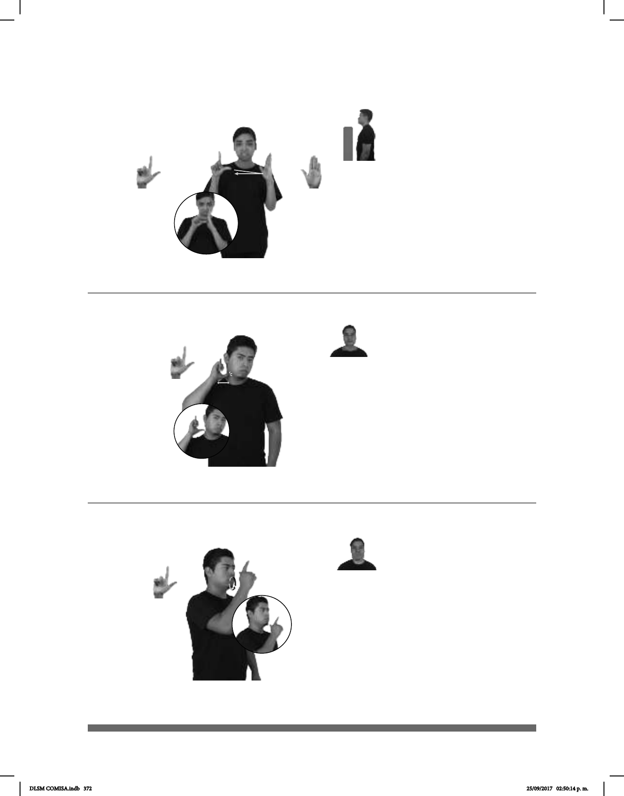

372
Seña: SB
MD L.1, MB B-P.2
MD palma hacia afuera. MB
palma hacia la derecha.
MD y MB a la altura del pecho.
La MD golpea la palma de
MB.
Labios con las
comisuras hacia abajo.
1. sust. f. Exposición de
conocimientos relacionados con un tema,
especialmente la que en una sola sesión hace
un maestro ante sus alumnos o un alumno
ante su maestro; clase. 2. sust. f. Enseñanza
que alguien saca tomando como ejemplo
algo o alguien.
Seña: SM
L.1
Palma oblicua hacia
la izquierda y hacia afuera.
Sobre el cuello.
La mano simula
varios saltos.
sust. m. Miembro del
poder legislativo de un Estado.
(L-94)
(L-95)
(L-96)
pro-TÚ YA LECCIÓN APRENDER
Tú ya aprendiste la lección.
LEGISLADOR YA PROPONER NUEVA LEY LSM
El legislador propuso una nueva ley de LSM.
Seña: SM
L.1
Palma hacia la
izquierda.
A la altura de la boca.
La mano se mueve
formando círculos.
1. sust. f. Sistema de
se comunican los miembros de una
comunidad humana.
LENGUA MÁS HABLA CHINA, INGLATERRA, ESPAÑA
DLSM COMISA.indb 372 25/09/2017 02:50:14 p. m.